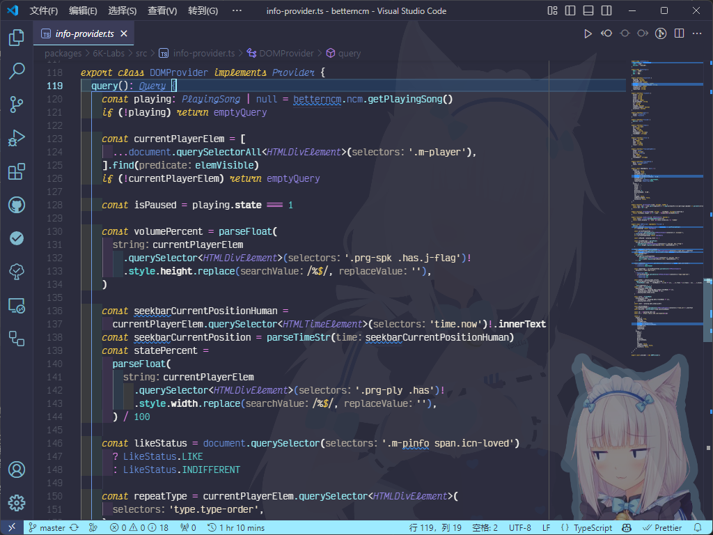
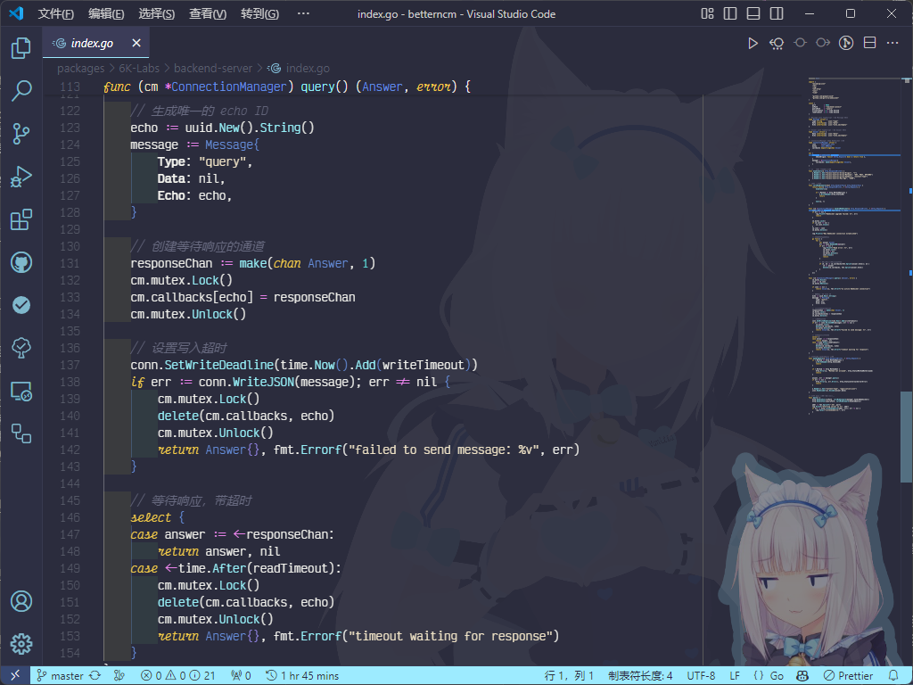
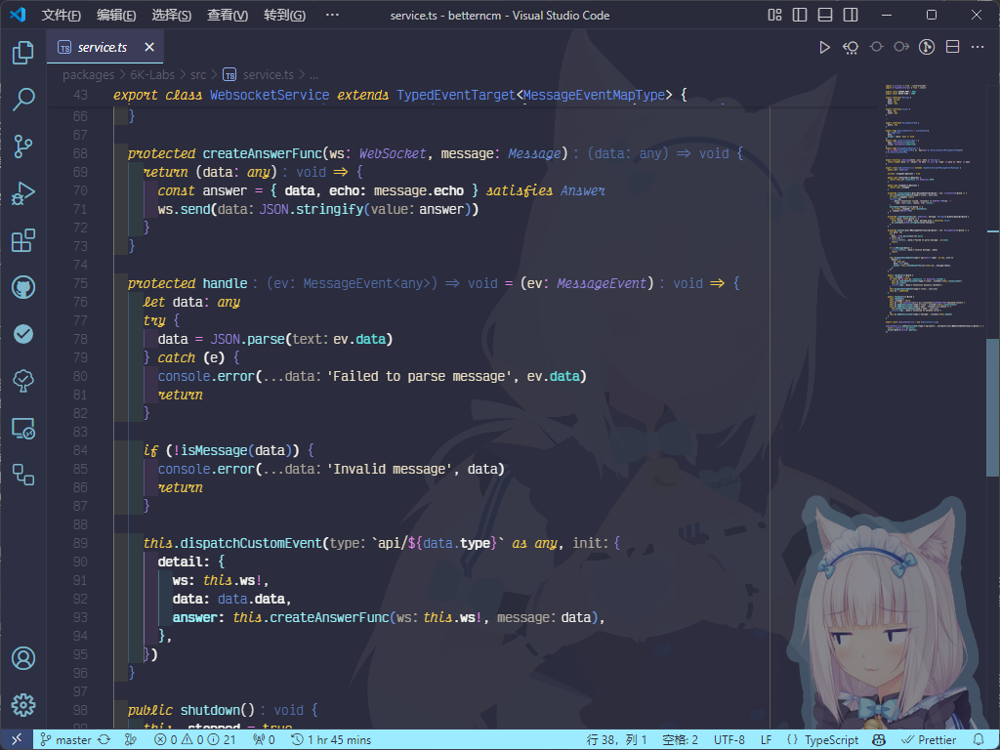
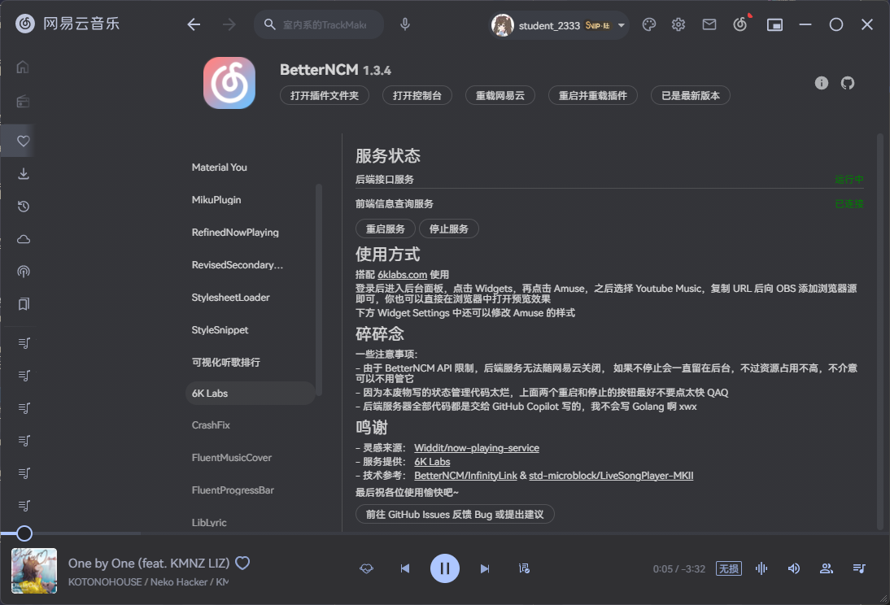

BetterNCM 6K Labs
网易云播放状态 OBS 直播挂件
项目开源地址：lgc2333/BetterNCM-6K-Labs
本项目受 Widdit/now-playing-service 启发而开发。该项目获取音乐软件当前播放信息的方式不太好，只能说是无奈中的取舍。由于我平时用网易云用得多，又正好在使用 BetterNCM，借助它，我可以从网易云中获取到更详细的播放中曲目信息，从而萌生想法开发了这个小项目。
通常，BetterNCM 插件会注入到网易云的前端进程中。所以本插件通过 DOM 操作以及 BetterNCM 提供的相关 API 来实现播放信息的获取。

DOM 操作代码展示
本插件对接 6K Labs 的 Amuse 挂件实现信息展示。挂件的 YouTube Music 信息获取方式会以 HTTP 方式轮询调用 localhost 下一个特定的地址，但由于原生前端无法启动 HTTP 服务器，且 BetterNCM 也没有给插件提供开 HTTP 服务器的 API，我想了一个歪路子。
我用 Go 编写了（我不会写 Go，GitHub Copilot 全盘帮我写的 QAQ）一个后端程序来启动一个 HTTP 服务器，这个后端服务器提供挂件需要的 API 的同时，本插件会与服务器建立一个 WebSocket 连接。当挂件请求后端服务器的 API 时，后端服务器会通过 WebSocket 连接向插件发出请求，插件获取当前播放状态后发送回去，最终后端服务器将发回的数据提供给挂件。

后端服务器相关代码展示

前端被调用相关代码展示
你只需要在 BetterNCM 的插件市场中下载本插件就可以开始愉快的使用了。

插件设置与使用方法展示

挂件效果展示